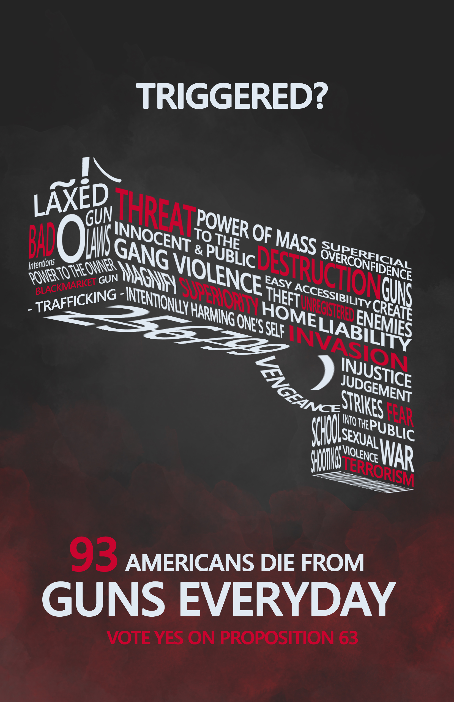
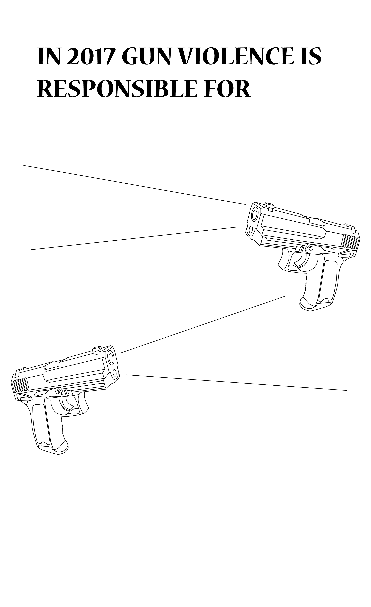

The gun poster looks to captivate onlookers to vote yes on proposition 63. This ballot proposes background checks on ammunition purchases and prohibits the possession of large-capacity magazines. The 3D typography gun design looks to provoke viewers to consider what actions they could do to lessen American gun violence. Words bolded with the color red are what most people associate guns with.
Second iteration with a blooded background in place of the gun smoke.
Gun Typography isolated. Each phrase listed on the gun design is associated with gun violence in the United States. Lokking deeper into the number scratch at the underside, it signifies how murder weapons have erased serial numbers making them illegal obtained.

Outside mockup of printable poster applications.
Early digital sketch of idea composition.